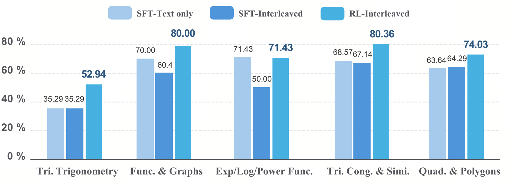

How RL Unlocks the Aha Moment in Geometric Interleaved Reasoning
A reinforcement-learning framework that transforms diagram drawing from a noisy distractor into a load-bearing scaffold for reasoning.
1 ByteDance
2 Shenyang Institute of Computing Technology, CAS
3 University of Chinese Academy of Sciences
4 Westlake University
5 Key Laboratory of Computing Power Network & Information Security, MoE
* Equal contribution · † Corresponding authors


